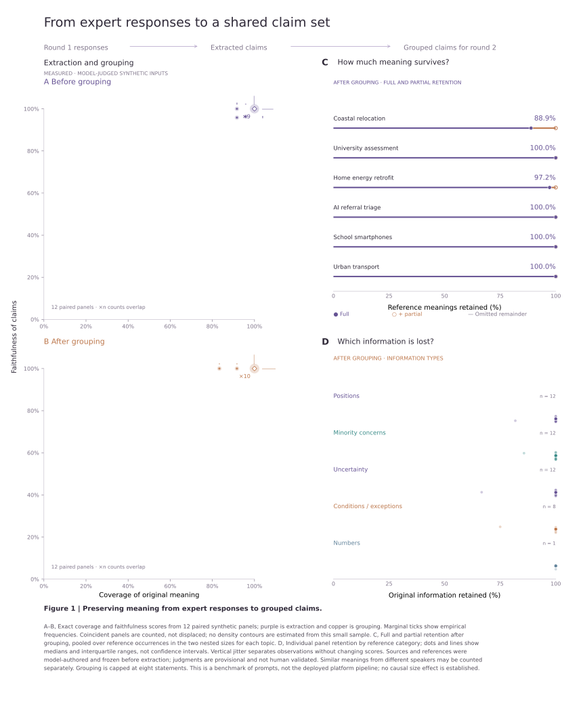

← Paper figuresREAL MODEL CALLS · NATURALISTIC SYNTHETIC INPUTS
What survives more realistic expert writing?
New: larger measured extraction overview →
Compare with the original easy baseline →
Loading run record…
Six topics · 4 and 8 participants · nested panels. Inputs and frozen references are model-authored. This is a more naturalistic synthetic benchmark, not human expert data. This is a benchmark of explicit extraction and grouping prompts, not the deployed Symphonia synthesis pipeline.
Provisional scores: a targeted review found both an omitted numerical detail and disputed judge penalties. Read the review notes. Raw scores are unchanged; they are not independently validated findings.

Vector PDF · High-resolution PNG · Scores · Full audit · Frozen design · Validation · Full run archive + code
New: explore claims and inferred assumptions as a reasoning flow → Illustrative example, separate from these measured outputs.
Inspect an actual output
Semantic audit against original information
The judge is a separate model. Reference meanings were frozen before extraction. Full source paragraphs and model outputs are provided for review; quote-validation flags are downloadable. These assessments remain provisional; the text is supplied so you can check its decisions.
Interpretation limits
Coverage counts predefined participant-linked meanings, not words. Similar meanings expressed by different participants can count separately. Only full preservation earns full coverage credit; partial preservation remains visible in the audit. Faithfulness measures whether each output claim is supported by the source. Neutrality, fairness and real-world correctness are not established by these scores.